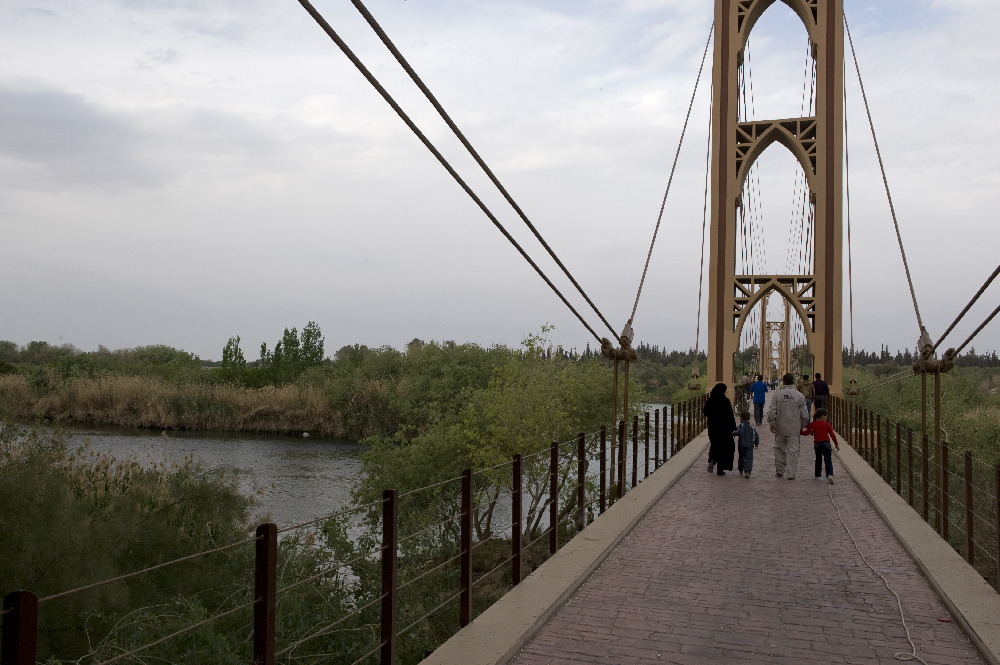
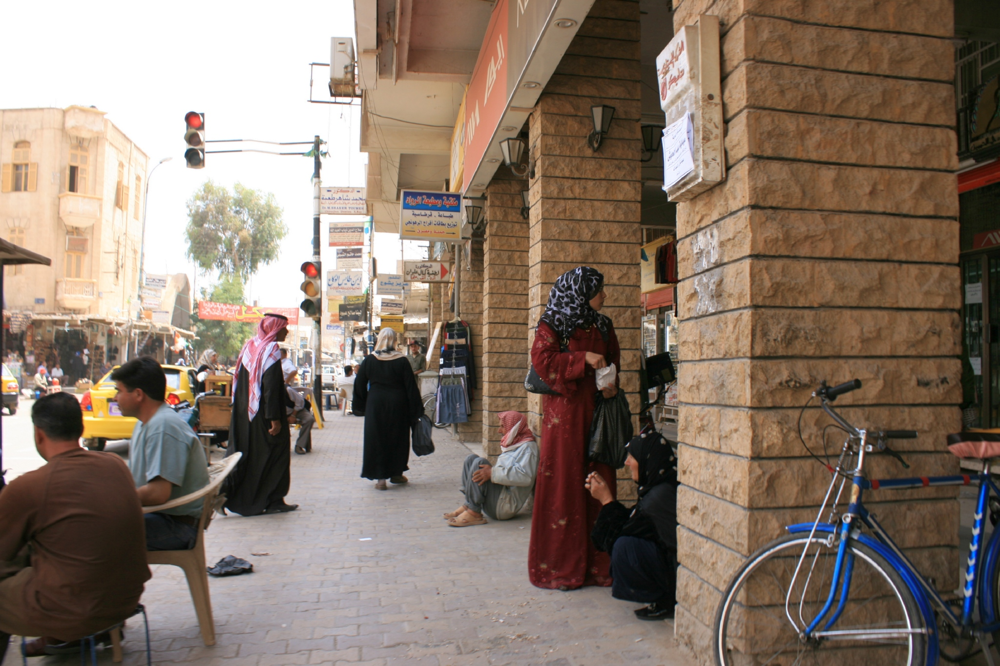
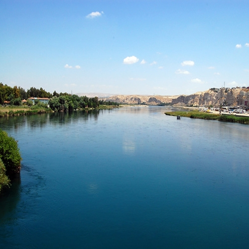
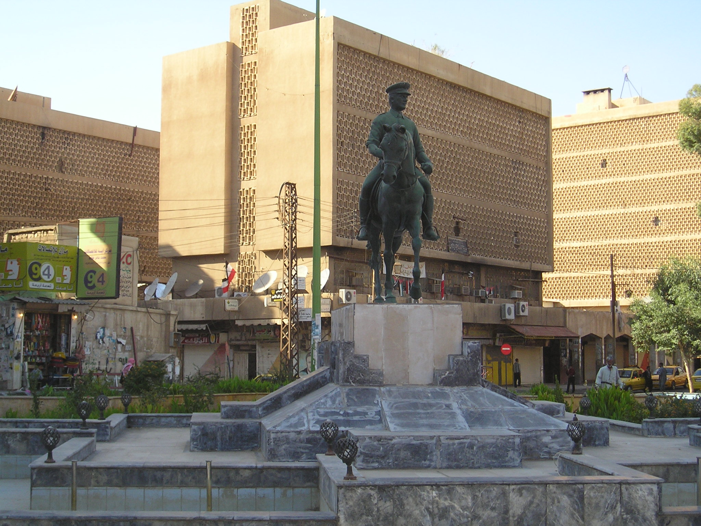
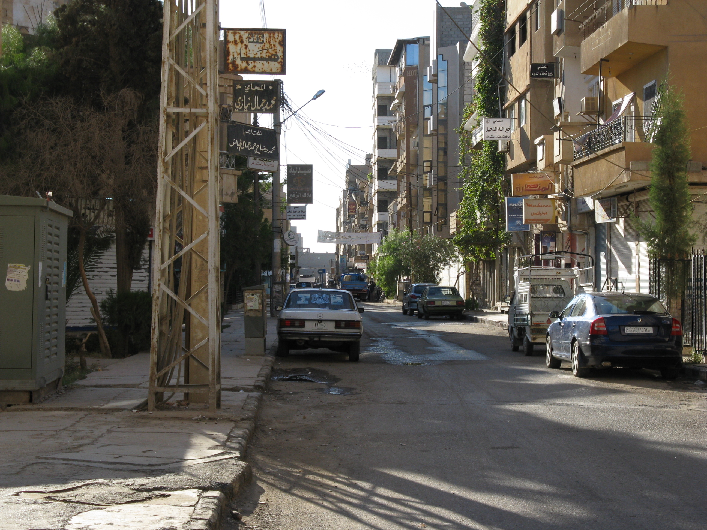
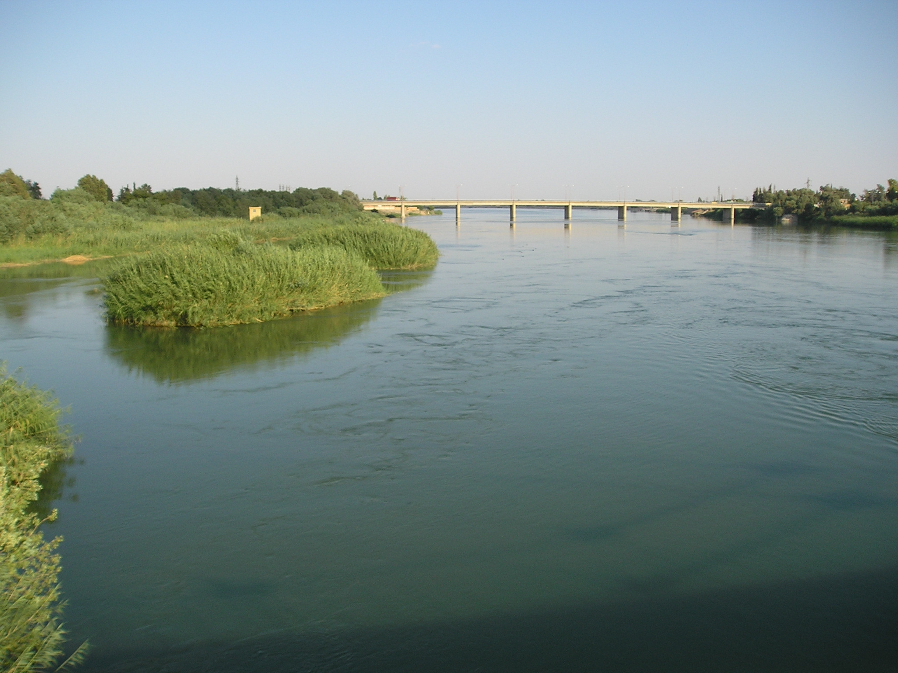
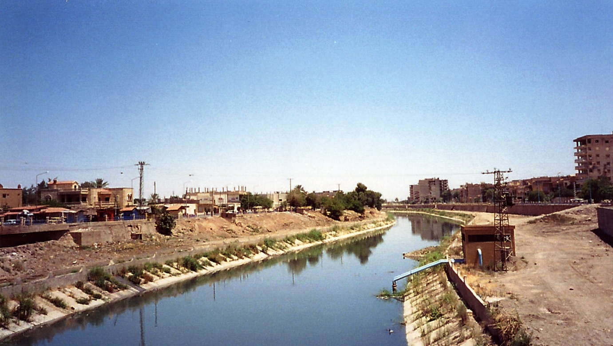
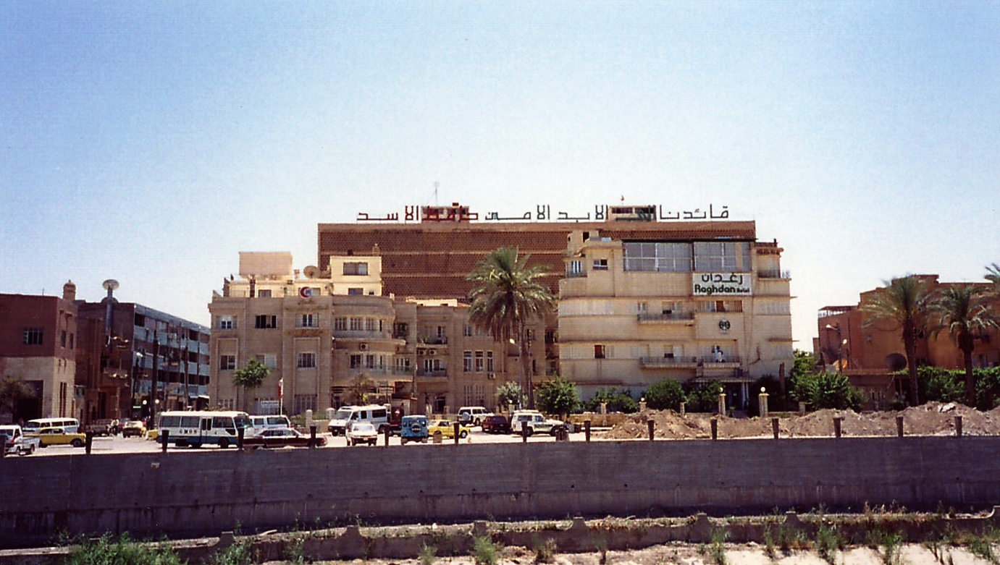

Multimédia
Nesta página encontra imagens e vídeos sobre Deir ez-Zor e o rio Eufrates.
Deir ez-Zor e a memória do Eufrates
Às margens do Eufrates
Deir ez-Zor situa-se no leste da Síria, junto ao rio que molda a paisagem da cidade.
Fotografias de Deir ez-Zor
Oito vistas reais da cidade, do Eufrates e dos seus lugares marcantes.








Vídeo
Deir ez-Zor, uma cidade junto ao Eufrates
Poesia
Deir ez-Zor cresce junto ao Eufrates,
Entre as margens, caminhos e cidades.
A ponte antiga ficou na memória,
E o rio continua a contar a sua história.